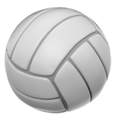
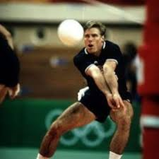

O vôlei é um esporte coletivo jogado por duas equipes de seis jogadores cada, separadas por uma rede. O objetivo é fazer a bola passar para o lado adversário, tocando-a com as mãos, sem deixar que ela toque o chão.
Melhor jogador do mundo
Karch Kiraly é considerado um dos melhores jogadores de vôlei de todos os tempos. Ele é conhecido por sua habilidade, versatilidade e liderança em quadra. Com uma carreira repleta de conquistas, incluindo múltiplos campeonatos mundiais e prêmios de MVP, Karch Kiraly é uma figura icônica no mundo do vôlei e continua a inspirar fãs e jogadores ao redor do mundo.
